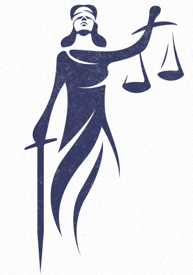

YCJA stands for Youth Criminal Justice Act. The YCJA released in 2003 and has been in use since then. YCJA has rules and procedures that apply to young people ages from 12 to 17 that broke laws and have commited criminal offenses.
The YCJA works with young criminals to find a suitable punishment for them. After they have completed their punishment, they will be reintegrated into society. The YCJA also ensures that a young person is put through meaningful consequences for their offence in order to promote continuing protection of society.